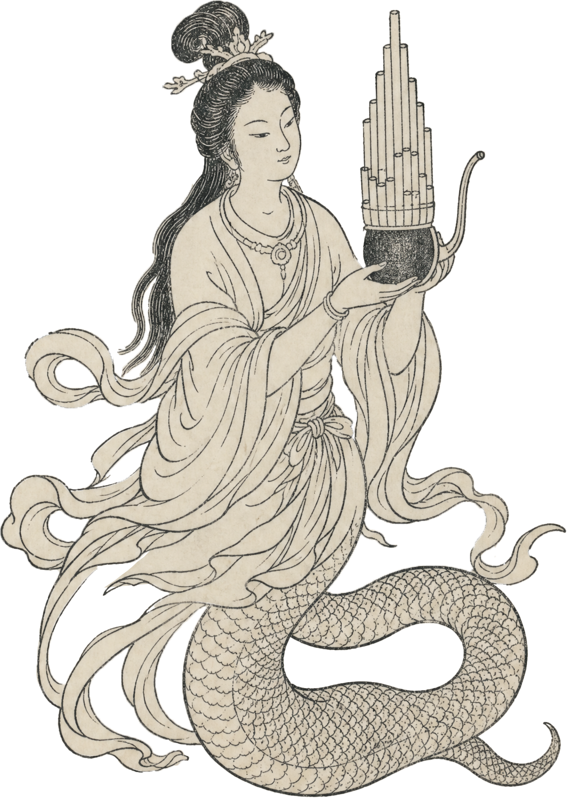
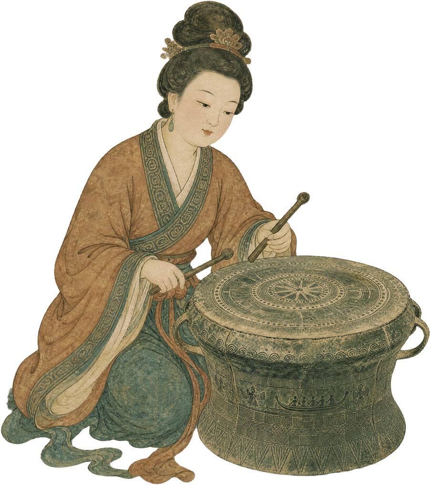
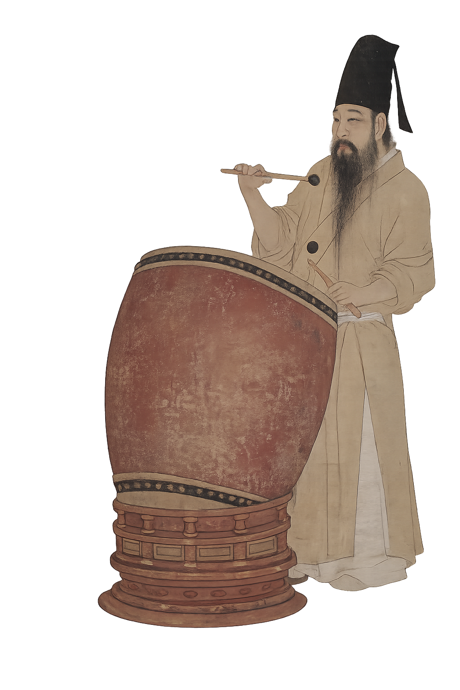
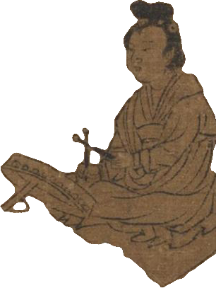

Observing Phenomena · Evolution
观象·演变

早期
琴之初形
古琴，又称瑶琴、玉琴、七弦琴，是中国最古老的弹拨乐器之一，有四千余年历史，最早见于《史记》。新石器时代已有八弦琴的雏形，是古琴的最早形态。古琴蕴含深厚中国古典文化与文人精神，是文人修身养性、寄情山水的乐器，被誉为"圣人之器"，位列"琴、棋、书、画"四艺之首。
商周时期，古琴发展为五弦琴，五弦象征五行与五音。古琴形制象征一年四季与十二个月，琴音深邃，造型沉稳，体现"天人合一"理念。琴乐被士人用于修身养性，注重心境淡泊，表达对历史、前贤、亲情等情感。

《诗经》《乐记》中有关琴的记载
Observing Phenomena · Evolution
观象·演变
战国
七弦定型
战国时期，七弦琴定型，周文王、武王各增一弦，形成七弦。古琴历史悠久，西周已有专业琴人，春秋时期琴艺高超，如师旷、伯牙等。
战国时期琴乐发展，孔子亦善琴，后世有《孔子读易》《泣颜回》等琴曲。古代"四大名琴"包括号钟、绕梁、绿绮、焦尾。

战国曾侯乙墓十弦琴、郭店七弦琴
Observing Phenomena · Evolution
观象·演变

唐宋
工艺精湛
唐琴多为雷氏所制，音质温劲松透，代表唐代音乐艺术的巅峰。唐代由于大量吸收外来文化，胡乐泛滥。但古琴仍是文人雅士喜爱的乐器，工艺达到新的高度。
唐代古琴造型沉稳，音质温润，是古琴发展的重要时期。相反，宋代是中国古琴发展的高峰时期。古琴在绘画中常被描绘，如顾恺之《斫琴图》、宋徽宗《听琴图》等，展现古琴制作与演奏场景。宋代古琴艺术达到了新的高度，琴曲丰富，琴派众多。

唐代"九霄环佩"、"春雷"、"大圣遗音"等唐琴实物，顾恺之《斫琴图》、宋徽宗《听琴图》
Observing Phenomena · Evolution
观象·演变

明清
文人雅器
明清时期，古琴是文人雅士必备乐器，琴文化达到鼎盛。
大量琴谱、琴论问世，古琴艺术得到了系统性总结。古琴成为文人修养的重要组成部分，琴会、琴社等活动频繁。

明清文人雅集中的古琴演奏、琴会琴社